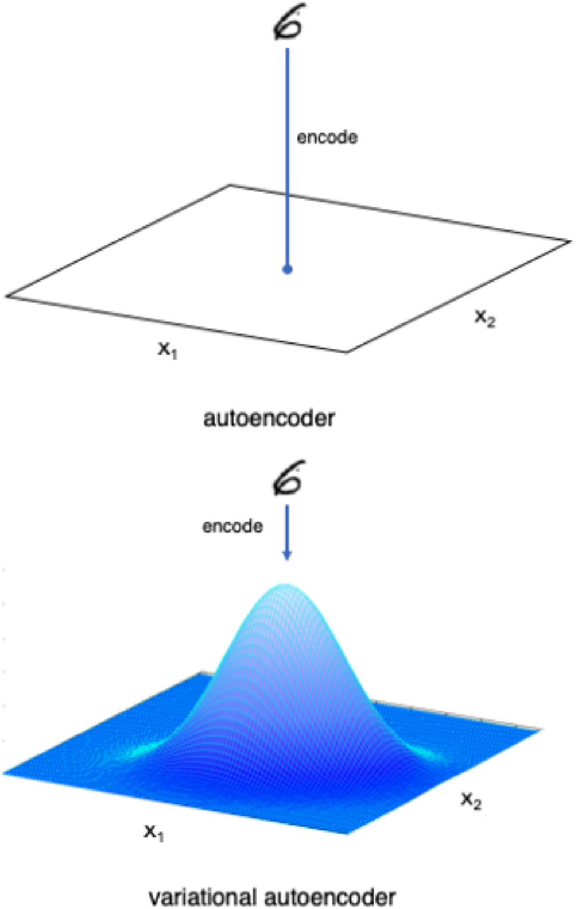

<!DOCTYPE html>
<html lang="en">
  <head>
    <meta charset="utf-8" />
    <meta name="viewport" content="width=device-width, initial-scale=1.0, maximum-scale=1.0, user-scalable=no" />

    <title>Autoenkoder</title>
    <link rel="shortcut icon" href="./../../favicon.ico" />
    <link rel="stylesheet" href="./../../dist/reset.css" />
    <link rel="stylesheet" href="./../../dist/reveal.css" />
    <link rel="stylesheet" href="./../../dist/theme/beige.css" id="theme" />
    <link rel="stylesheet" href="./../../css/highlight/zenburn.css" />

    <link rel="stylesheet" href="./../../_assets/custom.css" />

  </head>
  <body>
    <div class="reveal">
      <div class="slides"><section ><section data-markdown><script type="text/template">

# Autoenkoder
## (autoasocjator)


<div class="cols"><div>

Architektura sieci neuronowej wykorzystywana do uczenia bez nadzoru, wykorzystywana w takich zagadnieniach jak:
- redukcja wymiarowości
- odszumianie danych
- wykrywanie anomalii
- segmentacja
- kompresja
- modelowanie generatywne
- wzbogacanie danych rzeczywistych (*data augmentation*) 
- systemy rekomendacyjne

</div><div>


</div></div>
</script></section><section data-markdown><script type="text/template">

<div class="cols"><div>

## Budowa
Autoenkoder to dwuczęściowa sieć neuronowa, której części stanowią:
- *koder* - kompresuje dane wysokowymiarowe do niskowymiarowej reprezentacji
- *dekoder* - odtwarza oryginalne dane na podstawie tej niskowymiarowej reprezentacji

</div><div>


</div></div>
</script></section><section data-markdown><script type="text/template">

<div class="cols21"><div>

## Uczenie
- uczenie polega na poszukiwaniu parametrów sieci w celu zminimalizowania straty (różnicy) pomiędzy danymi wejściowymi, a wyjściem.
- ukryta warstwa będąca wyjściem kodera i wejściem dekodera stanowi ukrytą przestrzeń, do której skompresowane zostały dane wejściowe.

</div><div>


</div></div>
</script></section><section data-markdown><script type="text/template">


<div class="cols21"><div>

## Ukryta reprezentacja

- punkty w ukrytej przestrzeni stanowią skompresowaną reprezentację oryginalnych danych
- przestrzeń ukryta jest rozmaitością przestrzeni wielowymiarowej

</div><div>


</div></div>
</script></section></section><section ><section data-markdown><script type="text/template">
## Redukcja wymiarowości

Autoenkodery pozwalają odwzorować dane do przestrzeni o niższym wymiarze przy zachowaniu głównych cech danych.


</script></section><section data-markdown><script type="text/template">
## Detekcja anomalii
### Unsupervised anomaly detection (UAD)


<div class="cols"><div>

- sieć zostaje wytrenowana na danych bez anomalii
- dane posiadające anomalie generują dużą wartość funkcji straty
- anomalie są cechami, których sieć nie zna
- uczenie bez nadzoru (dane bez etykiet)

</div><div>


[Źródło](https://www.researchgate.net/publication/340499853_Autoencoders_for_Unsupervised_Anomaly_Segmentation_in_Brain_MR_Images_A_Comparative_Study)

</div></div>
</script></section><section data-markdown><script type="text/template">

## Wzbogacanie danych, odszumianie
### Unsupervised data augmentation (UDA)


<div class="cols"><div>

- AE jako metoda wzbogacania i uzupełniania danych
- usuwanie szumu
- kolorowanie zdjęć
- uczenie bez nadzoru

</div><div>


[Źródło](https://towardsdatascience.com/convolutional-autoencoders-for-image-noise-reduction-32fce9fc1763)


[Źródło](https://www.researchgate.net/publication/340499853_Autoencoders_for_Unsupervised_Anomaly_Segmentation_in_Brain_MR_Images_A_Comparative_Study)

</div></div>
</script></section><section data-markdown><script type="text/template">
## Segmentacja


<div class="cols"><div>

- proces podziału danych (np. obrazu) na jednorodne regiony należące do wybranej klasy
- generowanie maski
- lokalizacja "pixel perfect"
- raczej zadanie dla autoenkoderów nielinearnych (U-Net)

</div><div>


Źródło własne


[Źródło](https://www.researchgate.net/publication/346399693_Beyond_Measurement_Extracting_Vegetation_Height_from_High_Resolution_Imagery_with_Deep_Learning)

</div></div>

</script></section></section><section ><section data-markdown><script type="text/template">
## Autoenkodery konwolucyjne


<div class="cols"><div>

- autoenkodery konwolucyjne zawierają w części kodującej filtry splotowe.
- dokonują one zmniejszenia rozmiaru danych wejściowych (*downsampling*)
- część dekodująca zawiera warstwy dokonujące splotu transponowanego (*transposed convolution*)
- dokonują one zwiększenia rozmiaru z reprezentacji ukrytej do rozmiaru oryginalnego (*upsampling*)

</div><div>


[Źródło](https://www.researchgate.net/publication/340499853_Autoencoders_for_Unsupervised_Anomaly_Segmentation_in_Brain_MR_Images_A_Comparative_Study)

</div></div>

</script></section><section data-markdown><script type="text/template">
## Splot transponowany

<div class="cols">
<div>

- zmiana kierunku projekcji: przejście z reprezentacji o mniejszym wymiarze do reprezentacji o większym wymiarze
- splot transponowany jest aproksymacją przekształcenia odwrotnego do splotu (lecz NIE jest do operacja rozplotu / dekonwolucji)
- splot danych rozrzedzonych zerami

</div>


<div>


Przykład działania splotu transponowanego

Źródło: [github.com/vdumoulin/conv_arithmetic](https://github.com/vdumoulin/conv_arithmetic)

</div>
</div>


</script></section></section><section ><section data-markdown><script type="text/template">
## Modelowanie generatywne


<div class="cols">
<div>

- modele generatywne znajdują rozkład prawdopodobieństwa oryginalnych danych w ukrytej przestrzeni
- po wytrenowaniu VAE wykorzystuje się wyłącznie część dekodującą
- próbkowanie z przestrzeni ukrytej pozwala wygenerować dane posiadające cechy danych weściowych, lecz nienależące do zbioru uczącego.
- VAE opisuje więc, jak w sensie probabilistycznym są generowane dane

</div>
<div>


Źródło: [www.tensorflow.org/tutorials/generative/cvae](https://www.tensorflow.org/tutorials/generative/cvae)

</div>
</div>
</script></section><section data-markdown><script type="text/template">
## Autoenkodery wariacyjne (*VAE*)


<div class="cols">
<div>

- w zwyczajnym autoenkoderze obraz jest mapowany bezpośrednio na punkt w przestrzeni ukryte
- w autoenkoderze wariacyjnym obraz jest mapowany na rozkład normalny wokół punktu w przestrzeni ukrytej
- VAE zakłada, że pomiędzy wymiarami w przestrzeni ukrytej nie ma korelacji
- ponieważ próbkujemy z z pewnego rozkładu, dekoder musi zapewnić, że obrazy bliskich punktów w przestrzeni ukrytej są podobne
</div>
<div>



</div>
</div>
</script></section><section data-markdown><script type="text/template">

## Architektura autoenkodera wariacyjnego


Źródło rysunku: [lilianweng.github.io/lil-log/2018/08/12/from-autoencoder-to-beta-vae](https://lilianweng.github.io/lil-log/2018/08/12/from-autoencoder-to-beta-vae)

</script></section><section data-markdown><script type="text/template">
## Działanie VAE

- dane wejściowe są kodowane do dwóch wektorów: średnia i odchylenie standardowe
- losowany jest element przestrzeni ukrytej o parametrach uzyskanych w procesie kodowania
- by umożliwić wsteczną propagację przez warstwę próbkującą, stosuje się "trik reparametryzacyjny"
- by reprezentacja w przestrzeń ukryta miała rozkład normalny $N(0,1)$, definiuje się regularyzację (KL loss)
- Kullback–Leibler divergence (KL divergence) - zwana też entropią względną lub relatywną entropią) jest miarą stosowaną w statystyce i teorii informacji do określenia rozbieżności między dwoma rozkładami prawdopodobieństwa $p$ i $q$.

$d_{KL}(p,q) = \sum\limits_i p(i) \log_2 \frac{p(i)}{q(i)}$
</script></section><section data-markdown><script type="text/template">
## Arytmetyka w przestrzeni ukrytej


<div class="cols">


</div>

[Źródło](https://houxianxu.github.io/assets/project/dfcvae)

</script></section></section><section ><section data-markdown><script type="text/template">
# Przykłady

Źródło przykładów: [dokumentacja TensorFlow](https://www.tensorflow.org/tutorials)

- [podstawowy autoenkoder z jedną warstwą ukrytą](https://github.com/tomgrad/SN-kod/blob/main/autoencoder_ts/basic.ipynb)
- [odszumianie obrazu z wykorzystaniem autoenkodera konwolucyjnego](https://github.com/tomgrad/SN-kod/blob/main/autoencoder_ts/denoise.ipynb)
- [wykrywanie anomalii](https://github.com/tomgrad/SN-kod/blob/main/autoencoder_ts/anomalies.ipynb)
- [autoenkoder splotowy wariacyjny](https://www.tensorflow.org/tutorials/generative/cvae)
</script></section><section data-markdown><script type="text/template">
# Źródła

- C. C. Aggarwal, *Neural Networks and Deep Learning*,  Springer 2018
- D. Foster, *Generative Deep Learning*, O'Reilly 2019</script></section></section></div>
    </div>

    <script src="./../../dist/reveal.js"></script>

    <script src="./../../plugin/markdown/markdown.js"></script>
    <script src="./../../plugin/highlight/highlight.js"></script>
    <script src="./../../plugin/zoom/zoom.js"></script>
    <script src="./../../plugin/notes/notes.js"></script>
    <script src="./../../plugin/math/math.js"></script>
    <script>
      function extend() {
        var target = {};
        for (var i = 0; i < arguments.length; i++) {
          var source = arguments[i];
          for (var key in source) {
            if (source.hasOwnProperty(key)) {
              target[key] = source[key];
            }
          }
        }
        return target;
      }

      // default options to init reveal.js
      var defaultOptions = {
        controls: true,
        progress: true,
        history: true,
        center: true,
        transition: 'default', // none/fade/slide/convex/concave/zoom
        plugins: [
          RevealMarkdown,
          RevealHighlight,
          RevealZoom,
          RevealNotes,
          RevealMath
        ]
      };

      // options from URL query string
      var queryOptions = Reveal().getQueryHash() || {};

      var options = extend(defaultOptions, {"controls":true,"width":1920,"height":1080,"theme":"beige"}, queryOptions);
    </script>


    <script>
      Reveal.initialize(options);
    </script>
  </body>
</html>
